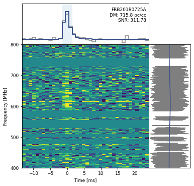
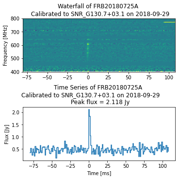

CHIME/FRB Waterfall Data¶
Author: Pranav Sanghvi
This tutorial will help you get aquainted with the CHIME/FRB Catalog waterfall data. In this tutorial, the data file FRB20180725A_waterfall.h5 was used, which contains data for FRB 20180725A. This data can be downloaded from the CHIME/FRB Open Data Release. To download additional data, visit the Canadian Astronomy Data Center.
All of the code provided in this tutorial, is also availaible through the CHIME/FRB Open Data python package.
cfod
from cfod.routines import waterfaller
wfall = Waterfaller(filename=`FRB20180725A_waterfall.h5`)
wfall.plot()
wfall.cal_plot(savepath="/some/path")
Read hdf5 files¶
The user can use the file_name variable to store the name of the file that contains the FRB data to be analyzed. Be sure to follow the instructions for downloading the hdf5 file for each FRB as desrcibed above. The file should be placed in the same directory as this notebook, or the full path should be specified in file_name.
Example
file_name = "FRB20180725A_waterfall.h5"
data = h5py.File(file_name, "r")
Explore the data files¶
File Contents
list(data.keys())
>>> ['frb']
Metadata
list(data["frb"].keys())
>>> ['calibrated_wfall',
'extent',
'model_spec',
'model_ts',
'model_wfall',
'plot_freq',
'plot_time',
'spec',
'ts',
'wfall']
Metadata Description
extent: the extent of the waterfall dataplot_freq: The values of the frequecy indices in \(\rm{MHz}\)plot_time: The value of the time indices in \(\rm{\mu s}\)wfall: waterfall datamodel_wfall: waterfall from fitted dataspec: Dynamic Spectrummodel_spec: model-fitted dynamic spectrumts: time series datamodel_ts: model-fitted time seriescaliberated_wfall: The waterfall data with calibration applied
Unpack the Data
data = data["frb"]
eventname = data.attrs["tns_name"].decode()
wfall = data["wfall"][:]
model_wfall = data["model_wfall"][:]
plot_time = data["plot_time"][:]
plot_freq = data["plot_freq"][:]
ts = data["ts"][:]
model_ts = data["model_ts"][:]
spec = data["spec"][:]
model_spec = data["model_spec"][:]
extent = data["extent"][:]
dm = data.attrs["dm"][()]
scatterfit = data.attrs["scatterfit"][()]
cal_obs_date = data.attrs["calibration_observation_date"].decode()
cal_source_name = data.attrs["calibration_source_name"].decode()
cal_wfall = data["calibrated_wfall"][:]
dt = np.median(np.diff(plot_time)) # the delta (time) between time bins
# this value is the same for both caliberated and uncalibrated data
Removing the Radio Frequency Interference¶
This process sets any frequency channel that has a higher variance than the mean variance (averaged across all frequency channels) to a NaN value using np.nan.
RFI Removal
q1 = np.nanquantile(spec, 0.25)
q3 = np.nanquantile(spec, 0.75)
iqr = q3 - q1
# additional masking of channels with RFI
rfi_masking_var_factor = 3
channel_variance = np.nanvar(wfall, axis=1)
mean_channel_variance = np.nanmean(channel_variance)
with np.errstate(invalid="ignore"):
rfi_mask = (channel_variance > \
rfi_masking_var_factor * mean_channel_variance) \
| (spec[::-1] < q1 - 1.5 * iqr) | (spec[::-1] > q3 + 1.5 * iqr)
wfall[rfi_mask,...] = np.nan
model_wfall[rfi_mask,...] = np.nan
spec[rfi_mask[::-1]] = np.nan
# remake time-series after RFI masking
ts = np.nansum(wfall, axis=0)
model_ts = np.nansum(model_wfall, axis=0)
Determine the Peaks and SNR of the Pulse¶
Peaks are identified after boxcar convolution.
Pulse Properties
def boxcar_kernel(width):
width = int(round(width, 0))
return np.ones(width, dtype="float32") / np.sqrt(width)
def find_burst(ts, min_width=1, max_width=128):
min_width = int(min_width)
max_width = int(max_width)
# do not search widths bigger than timeseries
widths = list(range(min_width, min(max_width + 1, len(ts)-2)))
# envelope finding
snrs = np.empty_like(widths, dtype=float)
peaks = np.empty_like(widths, dtype=int)
for i in range(len(widths)):
convolved = scipy.signal.convolve(ts, boxcar_kernel(widths[i]), mode="same")
peaks[i] = np.nanargmax(convolved)
snrs[i] = convolved[peaks[i]]
best_idx = np.nanargmax(snrs)
return peaks[best_idx], widths[best_idx], snrs[best_idx]
peak, width, snr = find_burst(ts)
print(f"Peak: {peak} at time sample, Width = {width*dt} ms, SNR = {snr}")
Visualize the Dynamic Spectra¶
First and foremost, we need to bin the frequency data before we visualize it.
Bin Frequency Data
def bin_freq_channels(data, fbin_factor=4):
num_chan = data.shape[0]
if num_chan % fbin_factor != 0:
raise ValueError("frequency binning factor `fbin_factor` should be even")
data = np.nanmean(data.reshape((num_chan // fbin_factor, fbin_factor) + data.shape[1:]), axis=1)
return data
# bin frequency channels such that we have 16,384/16 = 1024 frequency channels
wfall = bin_freq_channels(wfall, 16)
Plot the Dynamic Spectrum
fig = plt.figure(figsize=(6,6))
## Set up the image grid
gs = gridspec.GridSpec(ncols=2, nrows=2, figure=fig, width_ratios=[3, 1],
height_ratios=[1, 3], hspace=0.0, wspace=0.0)
data_im = plt.subplot(gs[2])
data_ts = plt.subplot(gs[0], sharex=data_im)
data_spec = plt.subplot(gs[3], sharey=data_im)
### time stamps relative to the peak
peak_idx = np.argmax(ts)
extent[0] = extent[0] - plot_time[peak_idx]
extent[1] = extent[1] - plot_time[peak_idx]
plot_time -= plot_time[peak_idx]
# prepare time-series for histogramming
plot_time -= dt / 2.
plot_time = np.append(plot_time, plot_time[-1] + dt)
cmap = plt.cm.viridis
### plot dynamic spectrum
wfall[np.isnan(wfall)] = np.nanmedian(wfall) # replace nans in the data with the data median
# use standard deviation of residuals to set color scale
vmin = np.nanpercentile(wfall, 1)
vmax = np.nanpercentile(wfall, 99)
data_im.imshow(wfall, aspect="auto", interpolation="none",
extent=extent, vmin=vmin, vmax=vmax, cmap=cmap)
### plot time-series
data_ts.plot(plot_time, np.append(ts, ts[-1]), color="tab:gray",
drawstyle="steps-post")
### plot spectrum
data_spec.plot(spec, plot_freq, color="tab:gray")
### plot model time-series and spectrum
if scatterfit:
data_spec.plot(model_spec, plot_freq, color=cmap(0.25))
data_ts.plot(plot_time, np.append(model_ts, model_ts[-1]),
color=cmap(0.25), drawstyle="steps-post", lw=2)
else:
data_spec.plot(model_spec, plot_freq, color=cmap(0.5))
data_ts.plot(plot_time, np.append(model_ts, model_ts[-1]),
color=cmap(0.5), drawstyle="steps-post", lw=1)
## BEautify plot
# remove some labels and ticks for neatness
plt.setp(data_ts.get_xticklabels(), visible=False)
data_ts.set_yticklabels([], visible=True)
data_ts.set_yticks([])
data_ts.set_xlim(extent[0], extent[1])
plt.setp(data_spec.get_yticklabels(), visible=False)
data_spec.set_xticklabels([], visible=True)
data_spec.set_xticks([])
data_spec.set_ylim(extent[2], extent[3])
plt.setp(data_im.get_xticklabels(), fontsize=9)
plt.setp(data_im.get_yticklabels(), fontsize=9)
#### highlighting the width of the pulse
data_ts.axvspan(max(plot_time.min(),
plot_time[peak] + 0.5 * dt \
- (0.5 * width) * dt),
min(plot_time.max(),
plot_time[peak] + 0.5 * dt \
+ (0.5 * width) * dt),
facecolor="tab:blue", edgecolor=None, alpha=0.1)
##### add event ID and DM labels
xlim = data_ts.get_xlim()
ylim = data_ts.get_ylim()
# add 20% extra white space at the top
span = np.abs(ylim[1]) + np.abs(ylim[0])
data_ts.set_ylim(ylim[0], ylim[1] + 0.2 * span)
ylim = data_ts.get_ylim()
ypos = (ylim[1] - ylim[0]) * 0.9 + ylim[0]
xpos = (xlim[1] - xlim[0]) * 0.98 + extent[0]
data_ts.text(xpos, ypos, "{}\nDM: {:.1f} pc/cc\nSNR: {:.2f}".format(eventname, dm,snr), ha="right",
va="top", fontsize=9)
data_im.locator_params(axis="x", min_n_ticks=3)
data_im.set_yticks([400, 500, 600, 700, 800])
data_im.set_ylabel("Frequency [MHz]", fontsize=9)
data_im.set_xlabel("Time [ms]", fontsize=9)
#savefigure
plt.savefig("{}_wfall.png".format(eventname), dpi=300, bbox_inches="tight")

Plotting Calibrated Data¶
Within the hdf5 file is the calibrated waterfall data, allowing one to plot the data as measured in Janskys.
Extract the Waterfall and Construct the Time Series
cal_ts = np.nanmean(cal_wfall, axis = 0)
cal_wfall[np.isnan(cal_wfall)] = np.nanmedian(cal_wfall) # replace nans in the data with the data median
#bin frequency channels such that we have 16,384/16 = 1024 frequency channels
cal_wfall = bin_freq_channels(cal_wfall,16)
vmin = np.nanpercentile(cal_wfall, 1)
vmax = np.nanpercentile(cal_wfall, 99)
times = np.arange(len(cal_ts))*dt
peak_idx = np.argmax(cal_ts)
times -= times[peak_idx]
times -= dt / 2.
extent[0] = times[0]
extent[1] = times[-1]
fig = plt.figure(figsize=(5,5), constrained_layout=True)
layout = """
A
C
"""
ax_dict = fig.subplot_mosaic(layout)
ax_dict["A"].imshow(cal_wfall, aspect="auto", vmin=vmin,vmax=vmax, extent = extent )
ax_dict["A"].set_title(f"Waterfall of {eventname} \n Calibrated to {cal_source_name} on {cal_obs_date}")
ax_dict["A"].set_yticks([400, 500, 600, 700, 800])
ax_dict["C"].plot(times,cal_ts, drawstyle="steps-post")
ax_dict["C"].set_xlabel("Time [ms]")
ax_dict["C"].set_title(f"Time Series of {eventname} \nCalibrated to {cal_source_name} on {cal_obs_date} \
\n Peak flux = {cal_ts[peak_idx]:.3f} Jy")
ax_dict["A"].set_ylabel("Frequency [MHz]")
ax_dict["C"].set_ylabel("Flux [Jy]")
